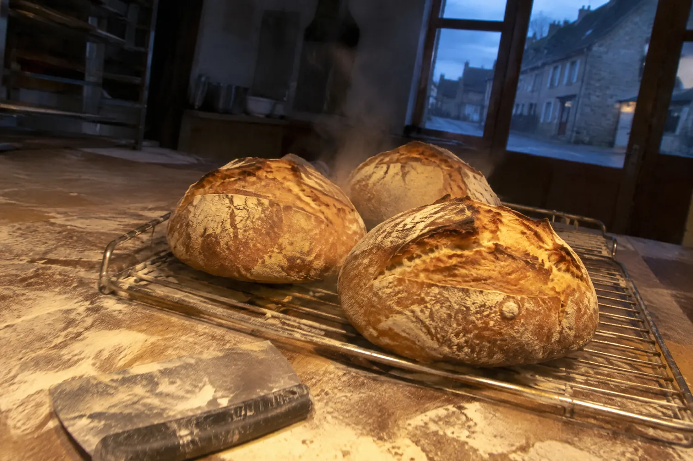
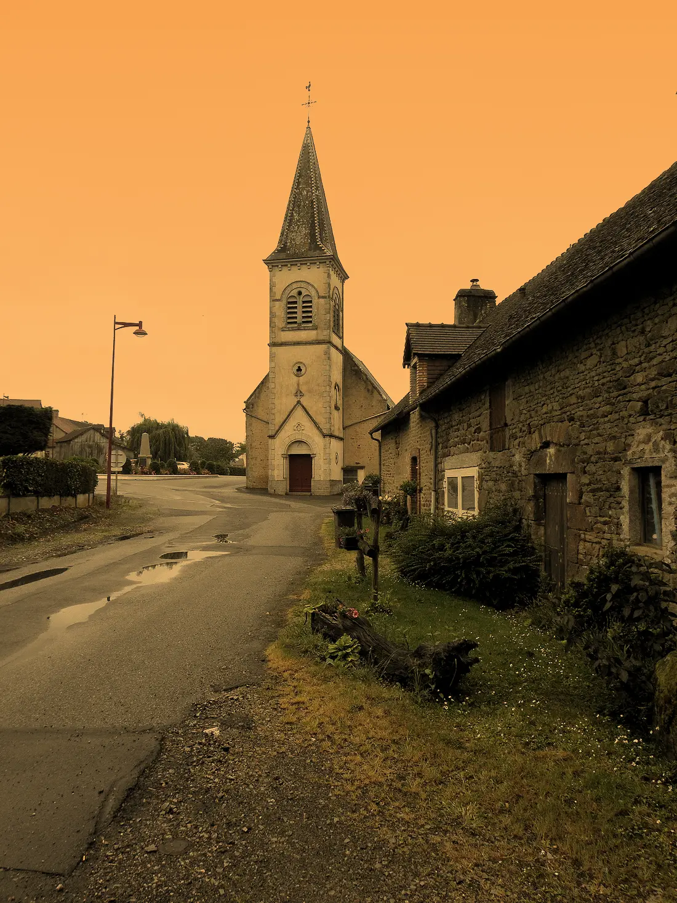
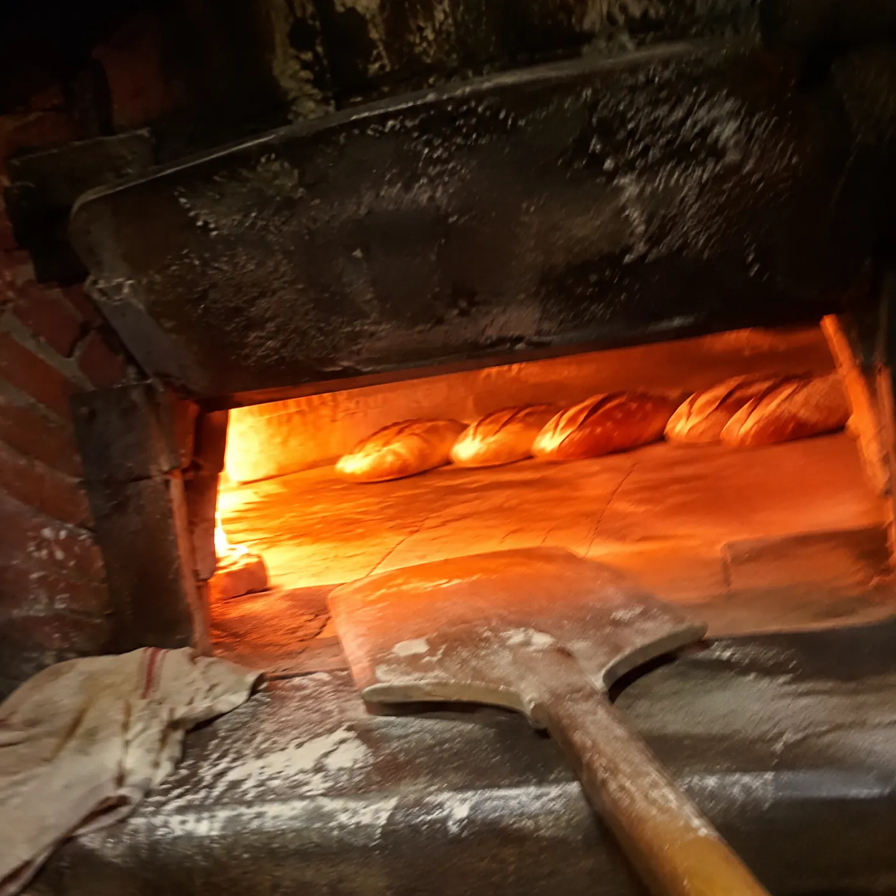
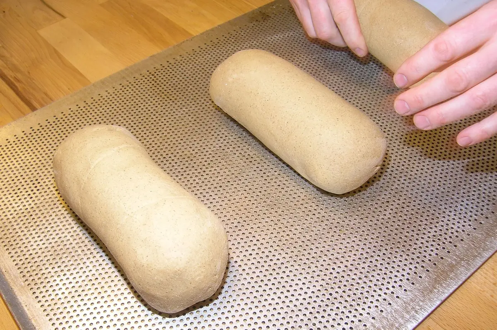

Mairie, le 5 octobre 2026
« La boulangerie de la Ferrière-Bochard ouvrira ses portes le samedi 10 octobre. »
Boulangerie artisanaleOrne, 61420
Quinze mois de rideau baissé, puis le four s’est rallumé. Depuis octobre 2026, Christophe et Melinda font de nouveau le pain du village.
Écrivez dans la farine, au doigt ou à la souris.

Le village
Le rideau est resté baissé de juillet 2025 à octobre 2026. Puis, en octobre, le pain est revenu dans le bourg.
709habitants
1boulangerie
17 oct.2026, l’inauguration
Un pâton par mois. Faites défiler : en octobre 2026, la pâte lève enfin.

Affiché par la mairie
Mairie, le 5 octobre 2026
« La boulangerie de la Ferrière-Bochard ouvrira ses portes le samedi 10 octobre. »
Mairie, le 10 octobre 2026
« La boulangerie est ouverte »
Inauguration le 17 octobre 2026.
Mairie, octobre 2026
« Tous nos vœux de succès à Christophe et Melinda ! »
Ouest-France, octobre 2026
« Retour du pain d’artisan : la boulangerie de La Ferrière-Bochard rouvre ses portes »
D’après l’article : Christophe est fils de boulanger, celui de Ciral. À relire avec vous.
« Nous comptons sur vous tous pour faire vivre ce commerce très important pour notre village. »
Le fournil
Pétrir, laisser lever, signer, cuire : le pain d’artisan prend son temps. Les heures du fournil sont les vôtres, on les écrira avec vous.
Farine, eau, sel, et le pétrin qui tourne dans la nuit.
Chez vous, à .. h ..
La pâte gonfle toute seule. Il suffit de lui laisser le temps.
Chez vous, pendant .. h ..
Un coup de lame, la grigne : c’est la signature du boulanger.
Le four est rallumé. La croûte dore, la boutique sent bon.
Chez vous, vers .. h ..

Le four est rallumé.

À vous de jouer
Avant d’enfourner, le boulanger entaille la pâte d’un coup de lame. Tracez vos grignes avec le doigt ou la souris, puis enfournez : elles s’ouvrent à la cuisson.
Tracez une grigne sur la pâte.
Dans le sac
Ce qui sort du four chaque jour, c’est à vous de nous le dire. Écrivez-le sur les pointillés : ça s’inscrit sur le sac, comme ce sera écrit sur votre site.
Boulangerie
de La Ferrière-Bochard
Dans le sac aujourd’hui
........................
........................
........................
Le pain d’artisan est de retour
Horaires de la mairie
Du mardi au vendredi, de 7 h à 13 h et de 16 h à 19 h. Le samedi et le dimanche, de 7 h à 13 h. Fermeture le lundi.
Une baguette par ouverture. Plus elle est longue, plus c’est ouvert longtemps.
Venir
La Ferrière-Bochard, 61420Rue : ..............................Téléphone : .. .. .. .. ..
Ouvrir l’itinéraireIci, une seule page pour vous donner l’idée.
Votre site peut avoir autant de pages que vous voulez.
Une page pour le pain, une pour les gâteaux, une pour les commandes des fêtes : c’est vous qui voyez. Vos textes, vos photos, vos couleurs, on ajuste tout ensemble.
Bonne soirée.